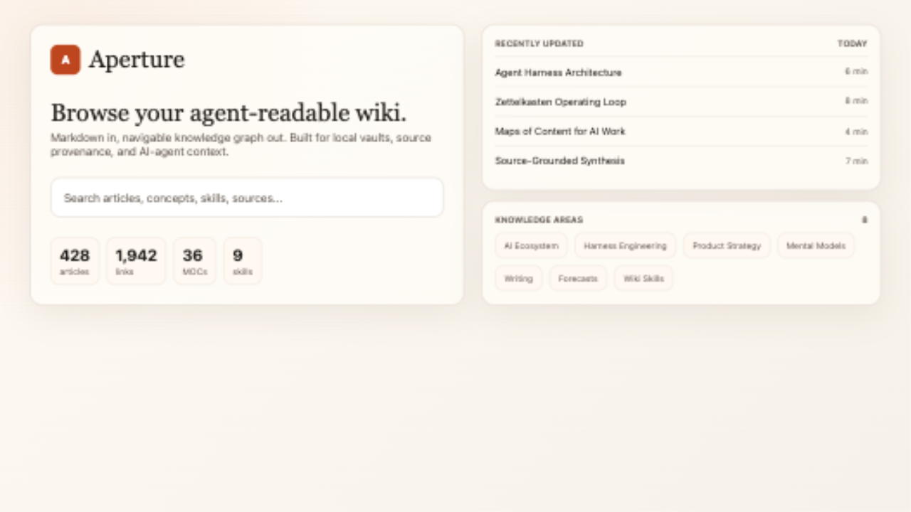
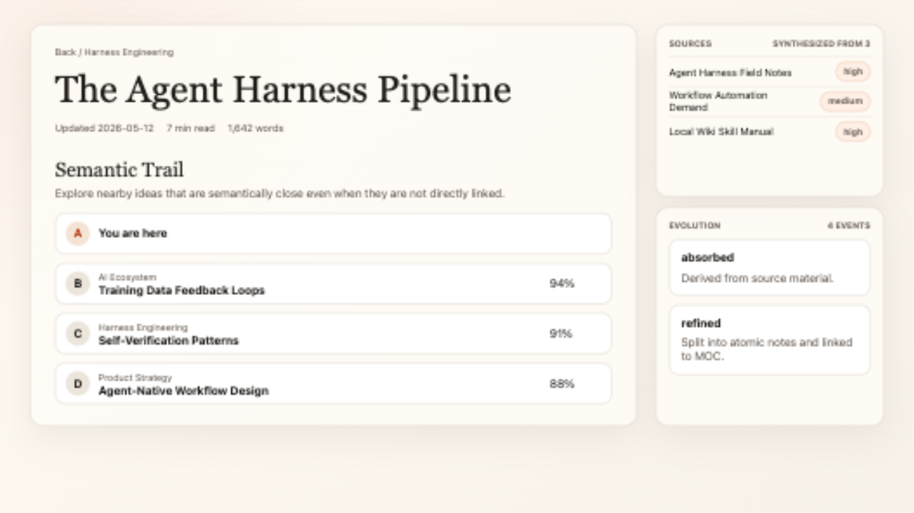
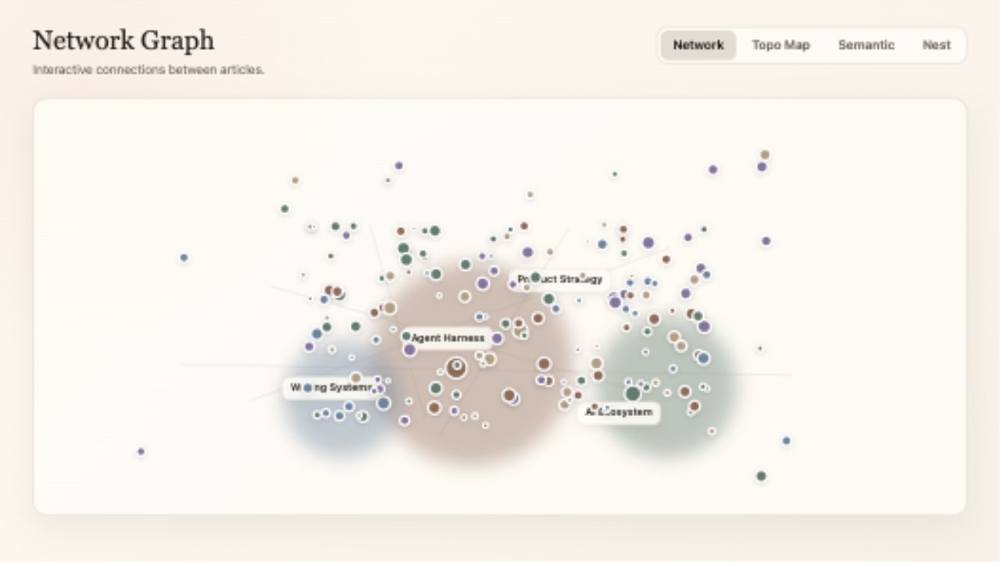

Turn an existing vault into a navigable wiki for humans and AI agents.

Articles carry source contribution, evolution history, backlinks, and a local graph.

Move through the vault by links, semantic neighbors, or density maps.

The upgraded skill system helps agents absorb raw sources into durable knowledge.
Articles, posts, transcripts, and briefs stay in markdown.
Update existing concepts before creating new pages.
MOCs explain relationships, tensions, and output directions.
APIs and llms.txt let future sessions read before reasoning.